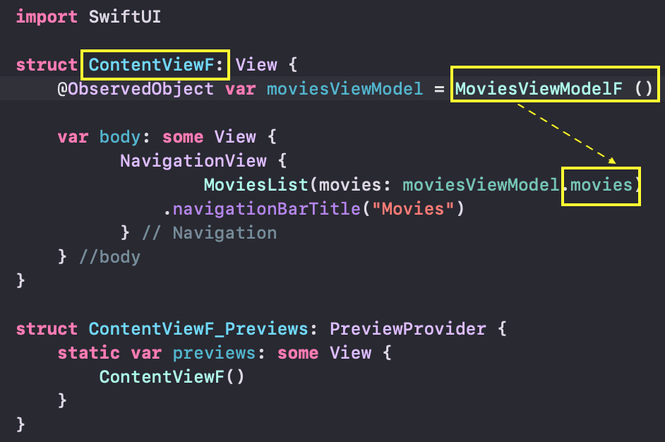

Несколько лет назад Swift вошел в десятку лучших в ежемесячном рейтинге популярных языков программирования TIOBE Index. Apple разработала Swift в 2014 году для приложений Linux и Mac.
Будучи языком программирования с открытым исходным кодом, который легко освоить, Swift поддерживает почти все, начиная с языка программирования Objective-C. Swift требует меньше навыков программирования по сравнению с другими языками программирования, и его можно использовать с IBM Swift Sandbox и IBM Bluemix. Swift используется в популярных приложениях для iOS, таких как WordPress, Mozilla Firefox, SoundCloud и даже в игре Flappy Bird. Профессионалы, разрабатывающие приложения для iOS, зарабатывают в среднем около 106 652 долларов в год.